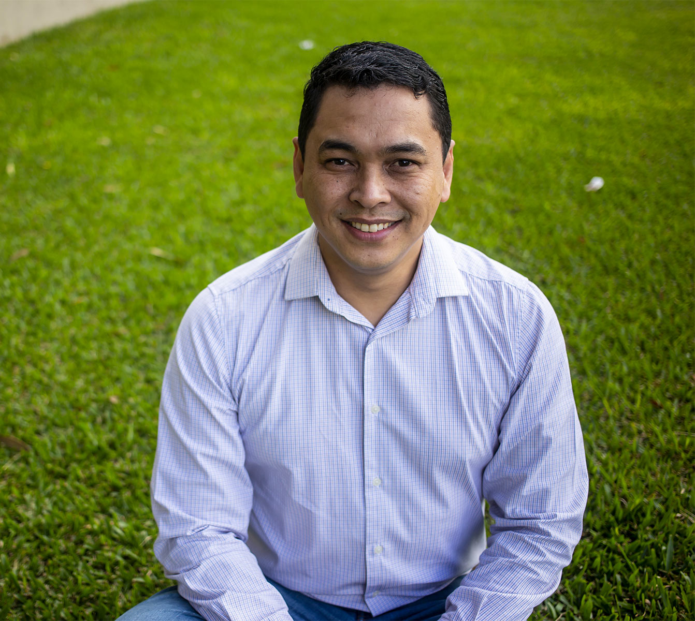
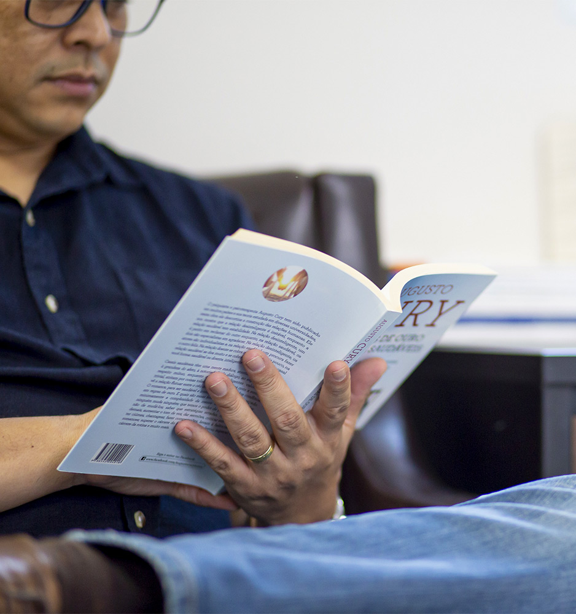

É hora de buscar o seu desenvolvimento pessoal.
Acredito que o processo de autoconhecimento traz resultados extraordinários e pode mudar o status quo de qualquer indivíduo. Psicoterapia, orientação profissional e mentoria de carreira para jovens, adultos e casais.

Um acompanhamento dedicado, 100% online.
Você fala direto comigo — sem fila de atendimento e sem triagem por terceiros. Da primeira mensagem ao acompanhamento contínuo, o processo é conduzido pelo mesmo profissional do início ao fim.

Um profissional dedicado, não uma fila de atendimento.
Ao agendar comigo, você conversa sempre com o mesmo psicoterapeuta — do primeiro contato ao acompanhamento de longo prazo, com CRP 08/12126 e mais de 18 anos de prática.
Agendar sessão pelo WhatsAppTrês passos para começar seu processo
Envie uma mensagem
Chame no WhatsApp e conte, com suas palavras, o que te trouxe até aqui. Não precisa ser um motivo grave — qualquer momento é válido para começar.
Primeira conversa
Marcamos um horário para uma sessão inicial, online, para nos conhecermos e entendermos juntos qual caminho faz mais sentido para você.
Acompanhamento contínuo
Seguimos com sessões regulares, no seu ritmo, construindo autoconhecimento e ferramentas reais para o seu dia a dia.
Minha profissão é a minha missão.
Sou Alexandre e posso começar esse texto dizendo o quanto amo minha missão e profissão. É uma satisfação sem tamanho perceber que o autoconhecimento pode destravar nossos potenciais.
Atuo desde 2006 com Psicoterapia, Orientação Profissional, Mentoria de Carreira e outras técnicas de desenvolvimento pessoal e profissional — e creio que a minha profissão é minha missão.
"Tudo depende de como vemos as coisas, e não de como elas são." — Carl Jung
Um acompanhamento pensado para cada momento da sua vida.
Psicoterapia Individual
Para jovens e adultos que buscam autoconhecimento, equilíbrio emocional e superação de questões como ansiedade, estresse, lutos e traumas.
Terapia de Casal
Espaço de escuta para casais que enfrentam conflitos de relacionamento, buscando fortalecer a comunicação e a conexão entre os dois.
Acompanhamento Terapêutico
Suporte contínuo e personalizado para quem atravessa momentos de transição, crise ou necessidade de cuidado mais próximo.
Avaliação Psicossocial
Análise aprofundada do histórico pessoal, social e emocional para embasar decisões clínicas, jurídicas ou organizacionais.
Mentoria de Carreira
Direcionamento estratégico para profissionais que buscam clareza, propósito e crescimento na trajetória de carreira.
Orientação Profissional
Apoio na tomada de decisões profissionais, indicado para quem está em transição de carreira ou início da vida profissional.
Um acompanhamento sério, ético e feito sob medida para você.
Sigilo profissional garantido, como exige o Código de Ética do CRP.
Abordagem personalizada, com base em Psicologia Analítica (junguiana).
Flexibilidade de horário, com sessões 100% online de qualquer lugar do Brasil.
Continuidade com o mesmo profissional, do primeiro contato ao acompanhamento de longo prazo.
Você não precisa esperar uma crise para cuidar da sua saúde mental.
Estes são alguns dos motivos mais comuns que levam pacientes a procurar acompanhamento psicoterapêutico.
Ideias que guiam o meu trabalho todos os dias.
"Qualquer árvore que queira tocar os céus precisa ter raízes tão profundas quanto sua altura."
Carl Jung"Suba o primeiro degrau com fé. Não é necessário que você veja toda a escada. Apenas dê o primeiro passo."
Martin Luther King"Se você não é o protagonista de seu próprio drama, é figurante na vida de outra pessoa."
Jordan Peterson"Tudo depende de como vemos as coisas, e não de como elas são."
Carl JungO que dizem as pessoas que passaram pelo processo.
"Excelente terapeuta. Profissional incrível, comprometido e verdadeiramente empático. Indico de olhos fechados."
"Um psicólogo excelente! Sempre com comentários pertinentes que me fizeram olhar a realidade por um outro ângulo. Evolui muito com a ajuda do Alexandre, mudei meu foco profissional, cresci como pessoa e me tornei mais resiliente! Sou muito grata pelo tempo que dividimos."
"O Alexandre foi o meu primeiro terapeuta e teve um papel fundamental em um momento muito difícil que eu passava na minha vida. Todas as sessões eram extremamente produtivas e eu saía sempre com a sensação de avanço."
"Ale foi fundamental no meu processo terapêutico. Indico de olhos fechados a todos que me pedem indicação de psicólogo."
"Estava ajudando apesar do pouco tempo que tive e entendimento do que se passava comigo precisava de mais tempo e tratamento, mas tenho tentado usar um pouco que consegui compreender da terapia para me ajudar."
Perguntas antes de agendar a primeira conversa
Como funcionam as sessões online?
Preciso ter um motivo grave para procurar terapia?
Quais assuntos posso tratar no acompanhamento?
Como faço para agendar minha primeira sessão?
Você atende apenas psicoterapia individual?
Qual a sua formação?
Suba o primeiro degrau com fé. Você não precisa ver toda a escada — apenas dar o primeiro passo.
Agende uma sessão online e comece hoje o seu processo de autoconhecimento e desenvolvimento pessoal.